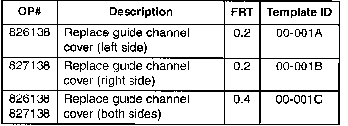
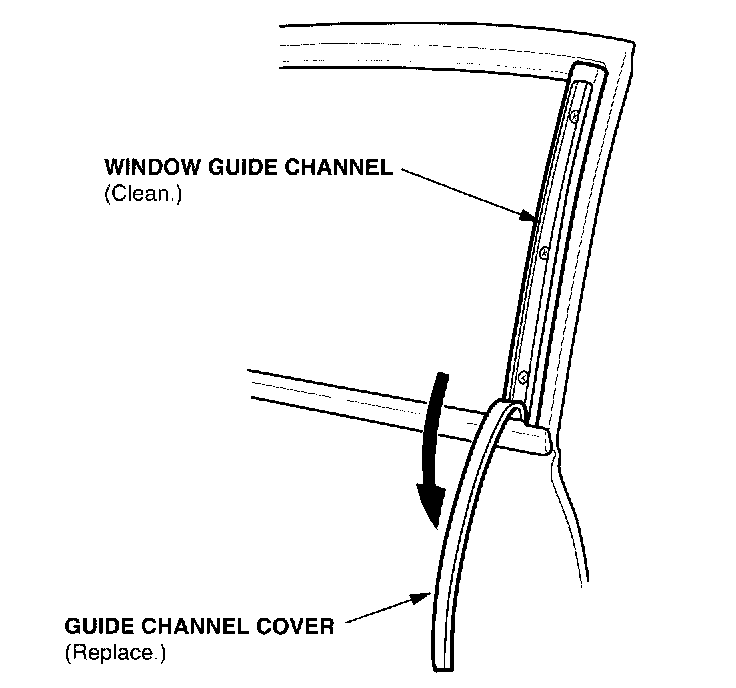

Window Guide Channel Cover Comes Loose
Service Bulletin:00-001
Date:
February 14, 2000
Title:
Guide Channel Cover Comes Loose
Models:
Applies To: 1994-98 Integra 3-Door - ALL
1999 Integra 3-Door - from VIN JH4DC2...YS000001 thru JH4DC2...YS002822
- from VIN JH4DC4...YS000001 thru JH4DC4...YS006740
SYMPTOM
The guide channel cover comes loose from the window guide channel.
PROBABLE CAUSE
Heat or previous removal has weakened the adhesive.
CORRECTIVE ACTION
Replace the cover.
PARTS INFORMATION
Guide Channel Cover: P/N 72233-SS0-013
REQUIRED MATERIALS
3M General Purpose Adhesive Cleaner:
3M P/N 051135-08984
(Each container will clean about 100 vehicles.)

WARRANTY CLAIM INFORMATION
In warranty: The normal warranty applies.
Failed Part: P/N 72233-580-003
Defect Code: 061
Contention Code: A02
Skill Level: Repair Technician
Out of warranty: Any repair performed after warranty expiration may be eligible for goodwill consideration by the District Technical Manager or your Zone Office. You must request consideration, and get a decision, before starting work.
REPAIR PROCEDURE

1. Remove and discard the affected guide channel cover.
2. Use adhesive cleaner to remove any adhesive residue from the window guide channel.
3. Peel the protective paper from the new cover, and press it firmly against the channel.
4. If necessary, replace the cover on the other side.